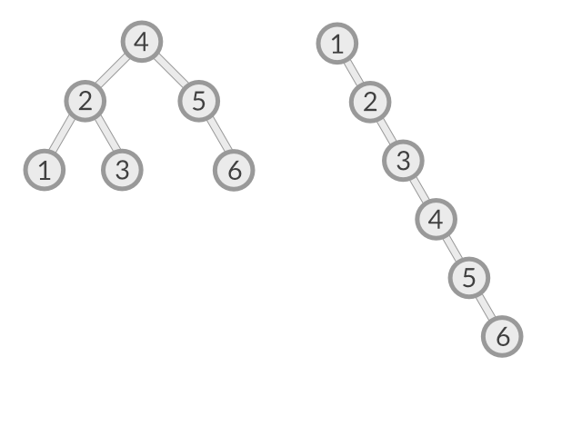
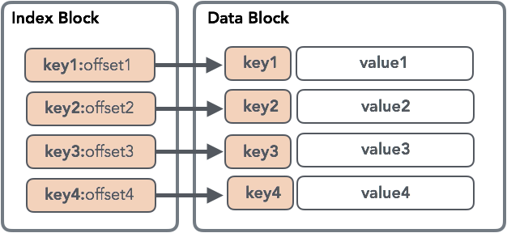

С Go lang всё понятно

Бинарный поиск
Бинарный поиск

Бинарное дерево поиска (BST)
| Массив (несорт.) | Связный список | Массив (сорт.) | BST (баланс.) | |
|---|---|---|---|---|
| Поиск | O(n) | O(n) | O(log n) | O(log n) |
| Добавление | O(1) | O(1) | O(n) | O(log n) |
| Удаление | O(n) | O(n) | O(n) | O(log n) |



SSTable

Чтение
Объединение данных из SSTable
Процесс уплотнения данных (Compaction)
| B-Tree | LSM-Tree | |
|---|---|---|
| Оптимизация на чтение | Оптимизация на запись | |
| Не хранится история всех изменений | Отсутствие фрагментации | |
| Нужно дефрагментировать | Нужно уплотнять | |
| Использование блокировок во время записи | Параллельный доступ без блокировок |